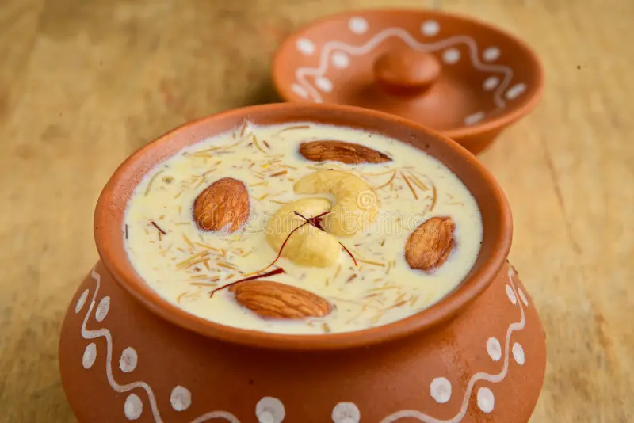

Kheer Recipe

Ingredients
- 1 liter full-fat milk
- ½ cup rice (soaked for 30 minutes)
- ½ cup sugar (adjust to taste)
- 4-5 green cardamoms (elaichi)
- 8-10 almonds (chopped or sliced)
- 8-10 pistachios (optional)
- 1 tbsp rose water or kewra water (optional)
- A pinch of saffron (optional)
Instructions
- Boil the milk in a heavy-bottomed pot. Stir occasionally to avoid burning.
- Add soaked and drained rice and cardamoms to the boiling milk.
- Cook on low flame and stir often so the rice doesn't stick to the bottom.
- Cook for 30-40 minutes, or until the rice is soft and the milk is thickened.
- Add sugar and stir well until dissolved.
- Add chopped almonds, pistachios, and rose water or kewra water if using.
- Cook for another 5-10 minutes until it reaches a creamy consistency.
- Let it cool. Serve warm or chilled, garnished with nuts or saffron.